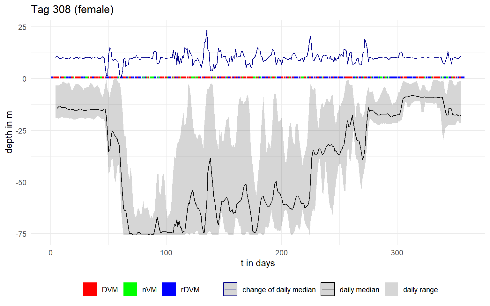
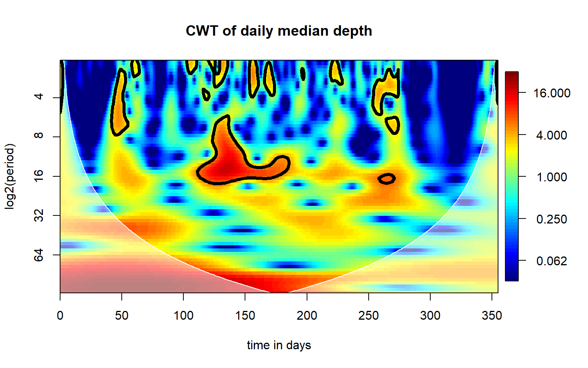
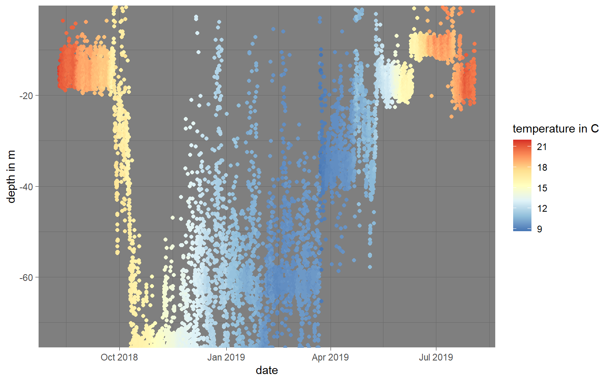
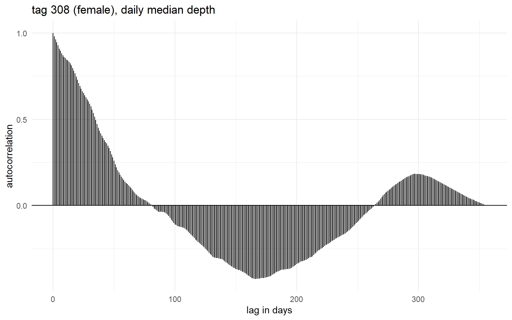
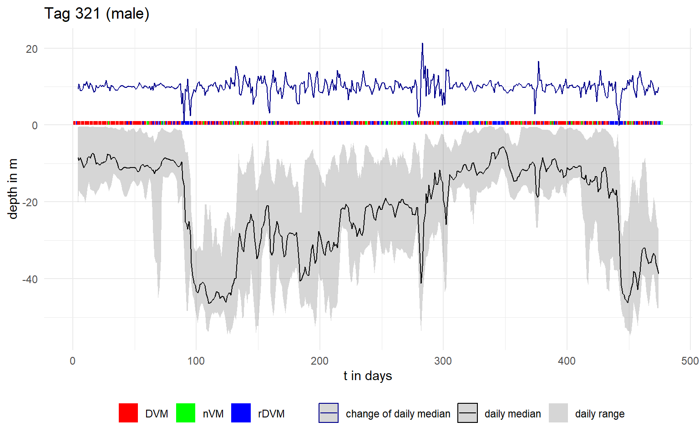
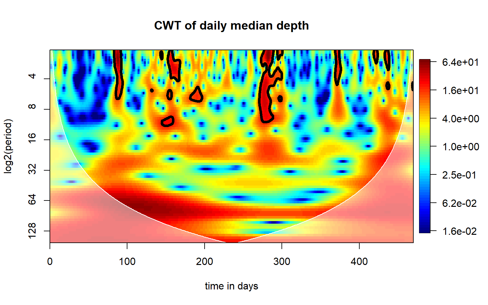
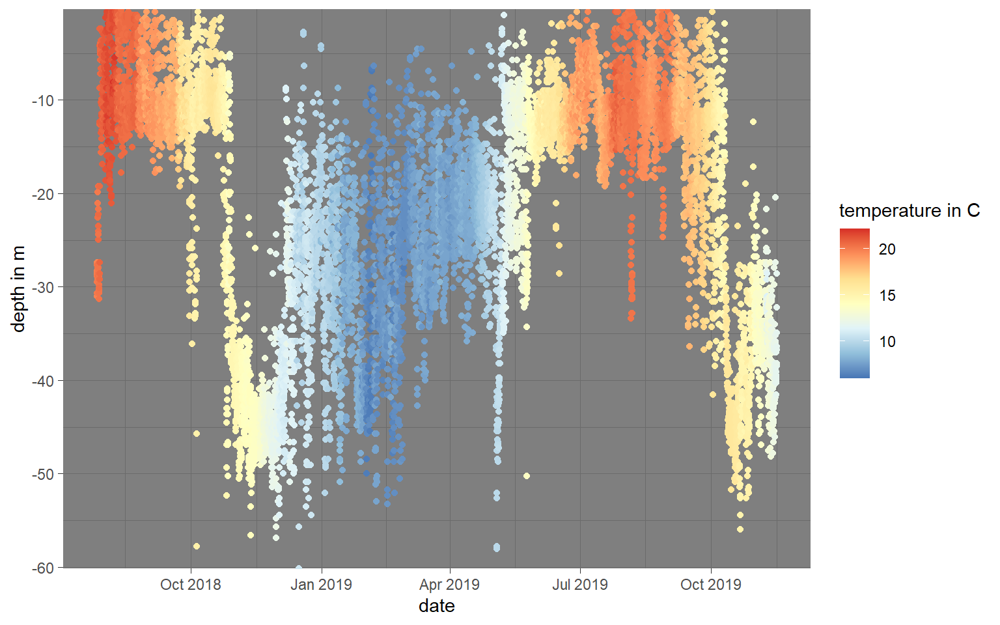
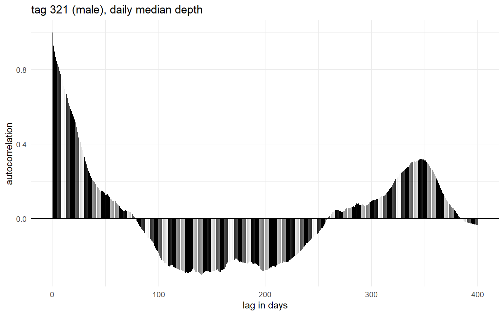

Continuous wavelet transform of data storage tag summary statistics.
Published
April 6, 2023
What I did: Compute Continuous Wavelet Tranforms (CWT) on daily summary statistics of two starry smooth-hound sharks that logged depth for ~1 year.
female shark (tag 308)
Daily summary statistics
Plot below: Daily summary statistics for tag 308: depth range, median depth, change of daily median, diel vertical migration behavaiour (DVM = diel vertical migration, rDVM = reverse diel vertical migration, nDVM = no diel vertical migration).

Continuous Wavelet Transform

Plot of the continuous wavelet transform of the daily median. Colour denotes the power of the period, log2-transformed.
Other


Top: Raw depth profile showing every 30th value (resulting in one point per hour), Temperature as colour.”
Bottom: Autocorrelation plot of the daily median depth.
male shark (tag 321)
Daily summary statistics
Plot below: Daily summary statistics for tag 321: depth range, median depth, change of daily median, diel vertical migration behavaiour (DVM = diel vertical migration, rDVM = reverse diel vertical migration, nDVM = no diel vertical migration).

Continuous Wavelet Transform

Plot of the continuous wavelet transform of the daily median. Colour denotes the power of the period, log2-transformed.
Other


Top: Raw depth profile showing every 30th value (resulting in one point per hour), Temperature as colour.”
Bottom: Autocorrelation plot of the daily median depth.
Source Code
---title: "Wavelet analysis"description: "Continuous wavelet transform of data storage tag summary statistics."# author: "Lotte Pohl"execute: echo: false include: trueoutput: html_document: df_print: paged theme: readable # toc_float: true toc: true # number_sections: false # toc_depth: 2date: 4.06.2023editor_options: chunk_output_type: consoleknitr: opts_chunk: collapse: trueformat: html: page-layout: article code-tools: true fig-width: 8 fig-height: 5 toc: trueimage: image.PNGdraft: false---```{r libraries}#| include: falselibrary(tidyverse)library(dplyr)library(plotly)library(ggplot2)library(sf)library(suncalc)library(dplyr)library(lubridate)library(pracma)library(psdr)library(StreamMetabolism)``````{r workspace}#| include: falselibrary(scales)library(biwavelet)library(ggplot2)library(dplyr)# rm(list = ls())dir_path_new <-"C:/Users/lotte.pohl/Documents/github_repos/MasterThesis_LottePohl"source(paste0(dir_path_new, "/01_code/06_functions/functions.R"))source(paste0(dir_path_new, "/01_code/02_load_data/load_wavelet_results.R"))source(paste0(dir_path_new, "/01_code/06_functions/compute_wavelettransform.R"))paste0(dir_path_new, "/01_code/05_plots_maps/plots_dst_summary.R") %>% base::source()paste0(dir_path_new, "/01_code/02_load_data/load_autocorrelation_results.R") %>% base::source()# # # source(paste0(dir_path, "/01_code/02_load_data/load_depth_temp_logs.R"))# # source(paste0(dir_path, "/01_code/04_analyses/FFT/calculate_fft_psd.R"))# # source(paste0(dir_path, "/01_code/05_plots_maps/plot_fft_periodogram.R"))# # source(paste0(dir_path, "/01_code/05_plots_maps/plot_dst_pressure_temp.R"))# # source(paste0(dir_path, "/01_code/05_plots_maps/plots_dst_pca_kmeans.R"))# # source(paste0(dir_path, "/01_code/05_plots_maps/plots_dst_summary.R"))# source(paste0(dir_path, "/01_code/05_plots_maps/plots_dst_pca_kmeans.R"))# source(paste0(dir_path, "/01_code/05_plots_maps/base_map.R"))# source(paste0(dir_path, "/01_code/02_load_data/load_dst_geolocation_output.R"))```> What I did: Compute Continuous Wavelet Tranforms (CWT) on daily summary statistics of two starry smooth-hound sharks that logged depth for ~1 year.<!-- :::{.panel-tabset} -->## female shark (tag 308)### Daily summary statistics*Plot below*: Daily summary statistics for tag 308: depth range, median depth, change of daily median, diel vertical migration behavaiour (DVM = diel vertical migration, rDVM = reverse diel vertical migration, nDVM = no diel vertical migration).```{r}##| layout: [[40,-20,40], [100]]#| include: true#| label: fig-dstsummary308_1##| fig-cap: "Daily summary statistics for tag 308: depth range, median depth, change of daily median, diel vertical migration behavaiour (DVM = diel vertical migration, rDVM = reverse diel vertical migration, nDVM = no diel vertical migration)."##| fig-subcap:##| - "Daily median depth and depth range of tag 308."##| - "Autocorrelation of the daily median depth."##| - "Wavelet transform result."#| layout-ncol: 1#| column: body-outset## | out-width: 50%#| fig.align: "center"p_t_308_depth_median_range_change_ribbon```### Continuous Wavelet Transform```{r}##| layout: [[40,-20,40], [100]]#| include: true#| label: fig-dstsummary308_3##| fig-cap: "Plot of the continuous wavelet transform of the daily median. Colour denotes the power of the period, log2-transformed."##| fig-subcap:##| - "Daily median depth and depth range of tag 308."##| - "Autocorrelation of the daily median depth."##| - "Wavelet transform result."#| layout-ncol: 1#| column: body-outset## | out-width: 50%#| fig.align: "center"par(oma =c(0, 0, 0, 1), mar =c(5, 4, 4, 5) +0.1)# the general plots you cannot save, I would have to call the function in the thesis manuscriptbiwavelet::plot.biwavelet(wt_308_mediandepth,type ="power.corr.norm", main ="CWT of daily median depth", xlab ="time in days", ylab ="log2(period)", plot.cb = T)```Plot of the continuous wavelet transform of the daily median. Colour denotes the power of the period, log2-transformed.### Other```{r}##| layout: [[40,-20,40], [100]]#| include: true#| label: fig-dstsummary308_2##| fig-cap: "Summary statistics for tag 308."##| fig-subcap:##| - "Raw depth profile showing every 30th value (resulting in one point per hour), Temperature as colour."##| - "Autocorrelation plot of the daily median depth."##| - "Wavelet transform result."#| layout-ncol: 2#| layout-nrow: 1#| column: body## | out-width: 50%#| fig.align: "center"p_308_depth_rawp_acf_308```*Top*: Raw depth profile showing every 30th value (resulting in one point per hour), Temperature as colour."*Bottom*: Autocorrelation plot of the daily median depth.## male shark (tag 321)### Daily summary statistics*Plot below*: Daily summary statistics for tag 321: depth range, median depth, change of daily median, diel vertical migration behavaiour (DVM = diel vertical migration, rDVM = reverse diel vertical migration, nDVM = no diel vertical migration).```{r}##| layout: [[40,-20,40], [100]]#| include: true#| label: fig-dstsummary321_1##| fig-cap: "Daily summary statistics for tag 321: depth range, median depth, change of daily median, diel vertical migration behavaiour (DVM = diel vertical migration, rDVM = reverse diel vertical migration, nDVM = no diel vertical migration)."##| fig-subcap:##| - "Daily median depth and depth range of tag 321."##| - "Autocorrelation of the daily median depth."##| - "Wavelet transform result."#| layout-ncol: 1#| column: body-outset## | out-width: 50%#| fig.align: "center"p_t_321_depth_median_range_change_ribbon```### Continuous Wavelet Transform```{r}##| layout: [[40,-20,40], [100]]#| include: true#| label: fig-dstsummary321_3##| fig-cap: "Plot of the continuous wavelet transform of the daily median. Colour denotes the power of the period, log2-transformed."##| fig-subcap:##| - "Daily median depth and depth range of tag 321."##| - "Autocorrelation of the daily median depth."##| - "Wavelet transform result."#| layout-ncol: 1#| column: body-outset## | out-width: 50%#| fig.align: "center"par(oma =c(0, 0, 0, 1), mar =c(5, 4, 4, 5) +0.1)# the general plots you cannot save, I would have to call the function in the thesis manuscriptbiwavelet::plot.biwavelet(wt_321_mediandepth,type ="power.corr.norm", main ="CWT of daily median depth", xlab ="time in days", ylab ="log2(period)", plot.cb = T)```Plot of the continuous wavelet transform of the daily median. Colour denotes the power of the period, log2-transformed.### Other```{r}##| layout: [[40,-20,40], [100]]#| include: true#| label: fig-dstsummary321_2##| fig-cap: "Summary statistics for tag 321."##| fig-subcap:##| - "Raw depth profile showing every 30th value (resulting in one point per hour), Temperature as colour."##| - "Autocorrelation plot of the daily median depth."##| - "Wavelet transform result."#| layout-ncol: 2#| layout-nrow: 1#| column: body## | out-width: 50%#| fig.align: "center"p_321_depth_rawp_acf_321```*Top*: Raw depth profile showing every 30th value (resulting in one point per hour), Temperature as colour."*Bottom*: Autocorrelation plot of the daily median depth.<!-- ::: -->